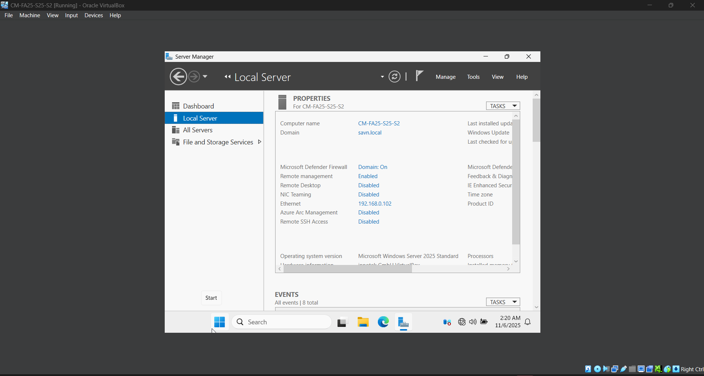

Project Overview
Description
Managed and created user and groups through Windows Active Directory on a local server
Skills Learned
- Skill 1: Learned GUI of Active Directory
- Skill 2: Learned CLI commands to add users to groups
Managed and created user and groups through Windows Active Directory on a local server